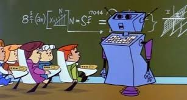

Education in 2050
In 2050, Due to the need to give education more individual approach, the priority will be given to homeschooling. Students will be able to study and learn what they want, when they want, and for as long as they want. It will also give more physical, emotional and religious freedom as well as opportunity to spend more time with family. With the help of technology, the way knowledge is passed on will undergo significant shift towards online platforms. There will probably be no campuses as we know them today. Learning won’t be limited to a physical school. Traveling classrooms and the real world environment will be a new campus. The role of a teacher will be not only to pass the knowledge but also to identify student’s strengths, interests and values. Their primary job will be to guide students in the areas where they need guidance as innovators. More of the emphasis will be given to problem-solving and gramification. Students need to fasten up their seat belts because 2050 will probably be a technical era!

Go Back